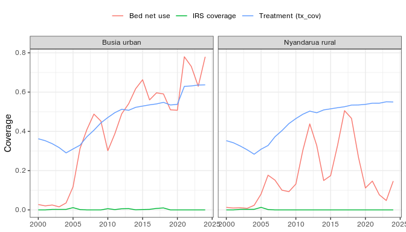
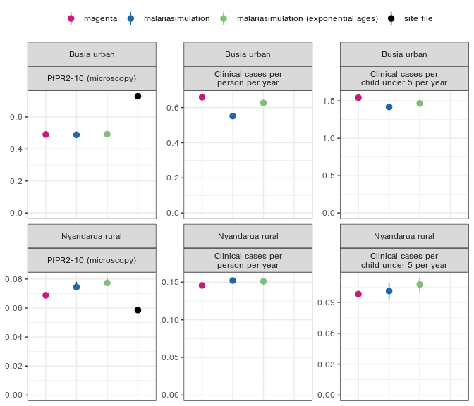

Imperial’s malariasimulation
site files (built with the site package, and calibrated
by foresite) describe each admin unit of a country: its calibrated EIR,
rainfall seasonality, mosquito species, and yearly treatment, bed net
and IRS coverage. site_to_pipeline() turns one unit into
the arguments for pipeline(), so magenta can
start from the site’s calibration rather than fitting its own EIR.
The aim is to get magenta into the right transmission
setting, and so in the right ballpark, for scenario modelling of drug
resistance. It is not a reimplementation of malariasimulation’s
interventions: only treatment, bed nets and IRS are used. SMC, PMC,
vaccines and larval source management in the site file are not modelled,
and IRS uses magenta’s default efficacy whatever the
insecticide.
site_to_pipeline() takes one unit of a site file, from
site::subset_site():
library(magenta)
s <- readRDS("calibrated_scaled_site.rds")
k <- s$sites$name_1 == "Busia" & s$sites$urban_rural == "urban"
unit <- site::subset_site(s, s$sites[k, ])
dl <- drug_list_create(drugs = list(drug_create_al()))
args <- site_to_pipeline(unit, years = 2000:2024, burnin = 20, drug_list = dl)
out <- do.call(pipeline, c(args, list(N = 50000, seed = 1)))The returned list holds:
site_seasonality()), which is given to
pipeline() directly through seasonality;site::net_efficacy at the unit’s
pyrethroid resistance, and species-weighted mosquito bionomics.Its year attribute gives the calendar year of each
simulated year. Drugs, resistance, non-malarial fevers and barcodes are
left to you: add them to the list before calling
pipeline(), and use the same drug_list that
was given to site_to_pipeline().
The site’s treatment coverage, tx_cov, is effective
coverage, and malariasimulation treats that fraction of clinical cases
with a drug that always works. magenta treats with real
drugs, which can fail, so site_ft() sets the proportion
treated to ft = tx_cov / efficacy, where efficacy is the
drugs’ baseline (no resistance) chance of clearing the infection. Before
there is resistance this gives the site’s effective coverage, and
resistance then lowers it. The site file’s split of tx_cov
into ACT and non-ACT drugs is not used, as both are fully effective in
malariasimulation.
malariasimulation tracks each net from distribution, and its
insecticide decays as exp(-t / gamman). The site’s nets are
topped up every year to hold use at the site’s values, and are kept for
about the retention half-life (825 days), so the nets in use at any time
are a mix of ages. magenta has a single bed net efficacy at
each time, so site_to_pipeline() uses the
"constant" ITN decay clock (itn_decay_clock in
model_param_list_create()), which holds efficacy at its
mean over a net life of the retention half-life, with a half-life of
gamman * log(2).
Two Kenya units were run in both models, from the Kenya site file (version malariaverse_06_2026, from foresite’s calibration): Busia urban, the highest transmission unit in Kenya (EIR 24.4), and Nyandarua rural, one of the lowest. Each was run with 3 seeds, 50,000 people, a 20 year burn-in and then 2000 to 2024:
magenta from site_to_pipeline(), treating
with AL with no resistance and non-malarial fevers off;site::site_parameters(), which uses the site’s life
table;magenta’s
exponential population (mean age 21 years), so that incidence over all
ages compares like for like. Age-specific rates, such as under 5
incidence, do not depend much on the demography, but the all ages rate
does, as the life table has fewer young children.In 2000 the site has no ACT use, so malariasimulation treats with the
site’s “SP full efficacy” drug, whose prophylaxis lasts about 41 days on
average, against about 25 days for AL in magenta.
Where the results come from. The runs take up to an hour each, so they were run once on a cluster rather than when this vignette is built, and the code below only reads their saved output. Everything used is in
vignettes_src/site/in the package repository:
run_site_comparison.Rsets up the cluster, runs all the tasks and writes the yearly summaries tosite_summary.rds, which is read below;funs.Rhas themagentaand malariasimulation runs and their yearly summaries;kenya_units.rdsholds the two units, cut from the Kenya site file.
library(ggplot2)
res <- readRDS("site/site_summary.rds")
runs <- res$runs
site <- res$site
unique(runs[c("model", "version")])
## model version
## 1 magenta 1.5.0
## 151 malariasimulation 3.0.1
## 301 malariasimulation (exponential ages) 3.0.1
model_colours <- c(magenta = "#c51b7d", malariasimulation = "#2166ac",
"malariasimulation (exponential ages)" = "#7fbf7b")
iv <- rbind(
data.frame(site[c("unit", "year")], input = "Treatment (tx_cov)", value = site$tx_cov),
data.frame(site[c("unit", "year")], input = "Bed net use", value = site$itn_use),
data.frame(site[c("unit", "year")], input = "IRS coverage", value = site$irs_cov)
)
ggplot(iv, aes(year, value, colour = input)) +
geom_line() +
facet_wrap(~unit) +
labs(x = NULL, y = "Coverage", colour = NULL) +
theme_bw() +
theme(legend.position = "top")
The first year of the comparison, before any intervention has had time to change the models apart. Points are the mean over seeds and whiskers their range. The site file’s PfPR2-10 (the Malaria Atlas Project estimate the EIR was calibrated to) is shown too, as a single value.
y <- runs[runs$year == 2000, ]
outputs <- c(pfpr_2_10 = "PfPR2-10 (microscopy)",
clinical = "Clinical cases per person per year",
clinical_05 = "Clinical cases per child under 5 per year")
d <- do.call(rbind, lapply(names(outputs), function(v) {
a <- stats::aggregate(y[[v]], y[c("model", "unit")],
function(x) c(mean = mean(x), lo = min(x), hi = max(x)))
cbind(a[c("model", "unit")], as.data.frame(a$x), output = outputs[[v]])
}))
s <- site[site$year == 2000, ]
d <- rbind(d, data.frame(model = "site file", unit = s$unit, mean = s$site_pfpr,
lo = s$site_pfpr, hi = s$site_pfpr, output = outputs[["pfpr_2_10"]]))
d$output <- factor(d$output, outputs)
model_colours <- c(model_colours, "site file" = "black")
d$model <- factor(d$model, names(model_colours))
ggplot(d, aes(model, mean, colour = model)) +
geom_pointrange(aes(ymin = lo, ymax = hi)) +
facet_wrap(unit ~ output, scales = "free_y", ncol = 3, labeller = label_wrap_gen(24)) +
expand_limits(y = 0) +
scale_colour_manual(values = model_colours) +
labs(x = NULL, y = NULL, colour = NULL) +
theme_bw() +
theme(legend.position = "top", axis.text.x = element_blank(),
axis.ticks.x = element_blank())
tab <- stats::aggregate(cbind(pfpr_2_10, clinical, clinical_05) ~ unit + model,
data = y, FUN = mean)
tab[order(tab$unit, tab$model), ]
## unit model pfpr_2_10 clinical
## 1 Busia urban magenta 0.49026145 0.6589800
## 3 Busia urban malariasimulation 0.48831023 0.5516122
## 5 Busia urban malariasimulation (exponential ages) 0.49204903 0.6265229
## 2 Nyandarua rural magenta 0.06877799 0.1456733
## 4 Nyandarua rural malariasimulation 0.07443231 0.1521549
## 6 Nyandarua rural malariasimulation (exponential ages) 0.07729246 0.1510800
## clinical_05
## 1 1.54348177
## 3 1.41977744
## 5 1.46626727
## 2 0.09804645
## 4 0.10113195
## 6 0.10741549In 2000 magenta and malariasimulation agree closely:
PfPR2-10 is within about 0.01 of each other in both units (0.49 in Busia
urban, 0.07 in Nyandarua rural), and clinical incidence is within about
5% when malariasimulation uses the same exponential ages as
magenta. The site’s life table has fewer young children
than an exponential population, so it lowers all ages incidence in
malariasimulation (0.55 against 0.66 in Busia urban) but changes under 5
incidence and prevalence little. Both models are well below the site
file’s PfPR2-10 in Busia urban (0.73), which comes from the site’s
calibration or how these runs differ from foresite’s, not from
magenta.
The models then drift apart over time, as interventions come in and the places where they are encoded differently start to matter:
netz net loss and the site’s retention half-life, and the
efficacy of each net then decays from its own distribution;
magenta holds efficacy at its mean over a net life (the
"constant" clock) and takes the site’s net use directly as
coverage;magenta starts people from 5
equilibrium heterogeneity groups, so who is bitten most is set up
differently;magenta an exponential age distribution, which changes all
ages rates;tx_cov with its own
fully effective drug (for example SP in 2000), while
magenta uses AL with ft set to give the same
effective coverage, and has its own prophylaxis (about 25 days against
about 41 for the SP drug);magenta uses one
mosquito population with species-weighted Q0 and bites
indoors and in bed, and a default IRS efficacy.Because of these, clinical incidence from magenta runs
set up this way should be used with care in years of high net use, and
the comparison is for getting magenta into the right
transmission setting rather than for matching malariasimulation year by
year.
A magenta run took about 35 minutes, and a
malariasimulation run about 19 minutes (50,000 people, 45 years).
Copy vignettes_src/site/ to a folder the cluster can
see, and run run_site_comparison.R from there (18 tasks,
each under an hour). Copy the site_summary.rds it writes
back to vignettes_src/site/, and rebuild this vignette with
Rscript vignettes_src/build_vignettes.R SiteFiles. The runs
install magenta from GitHub, so they use its current
version.